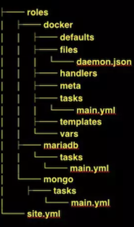

L13 Ansible 面试知识点
Architecture
- Ansible: Inventory / Modules / Plugins / Playbooks
- Group: Servers
Core
- Ansible 核心程序
- Core Modules 核心模块， 所有任务均有模块完成
- Custom Modules 自定义模块，完成核心模块无法完成的任务支持任意语言编写
- Host Inventory Ansible管理的主机信息，包括IP地址、SSH端口号,账号、密码等
- Playbooks “剧本”， YAML格式，模块化定义一系列任务，供外部统一调用
- Connection Plugins 链接插件，建立Ansibe与其他主机间的通信
Install Ansible
命令集
- ansible 定义并运行简单任务
- ansible-congig 查看、编辑、管理Ansible配置
- ansible-doc 文档查看工具
- ansible-galaxy 共享和下载roles的工具
- ansible-inventory 查看Inventory值息
- ansible-playbook 执行playbook
- ansible-pull 从仓库中拉取playbooks
- ansible-vault 文件加解密工具
- ansible-console REPL控制台执行Ansible任务
重要文件
/etc/ansible/ansible.cfg： 配置文件，一般情况无需修改/etc/ansiblelbosts： 主机清单，保存份理的主机的信息/etc/ansible/roles/公共角色
Inventory
示例配置
118.25.36.248 ansible_ssh_pass="**"
111.231.83.137 ansible_ssh_pass="**"
[servers]
118.25.36.248
111.231.83.137
[servers:vars]
ansible-ssh_user=root
主机
192.168.0.2
www.example.com
www[01:50].example.com
db-[a:f].example.com
主机变量
主机 k1=v1 k2=v2 ...
组
[组名]
主机 k1=v1 k2=v2 ...
主机 k1=v1 k2=v2 ...
组变量
[组名:vars]
主机 k1=v1 k2=v2 ...
主机 k1=v1 k2=v2 ...
初步体验
示例：在指定主机上创理文件
ansible 118.25.36.248 -m copy "'content='hello' dest=/root/hello.txt"
118.25.36.248： 主机或组- copy: 模块
dest=/root/hello.txt参数
查看所有模块
ansible-doc -l
查看参数文档
ansible-doc -s copy
幂等性
同样的条件．一次请求和重复的多次请求对系统资源的影晌是一致的
Modules
默认模块：command
ansible servers -a "date"
常用模块：
ping command shell yum pip copy
user group get_url file template unarchive
示例：安装docker/ 配置加速镜像／启动
ansible servers -m yum -a "name=docker state=latest skip_broken=yes"
ansible servers -m copy -a "src=/etc/docker/dasmon.json dest=/etc/docker/daemon.json"
ansible servers -m service -a "name=docker state=started enabled=yes"
playbook
编写playbook文件： docker.yml
---
- hosts: servers
remote_user: root
tasks:
- name: ensure docker is at the latest version
yum: name=docker state=latest skip_broken=yes
- name: config docker daemon
copy: src=tetc/docker/daemon.json dest=/etc/docker/daemon.json
notify:
- restart docker
- name: ensure docker is running
service: name=docker state=started
handlers:
- name: restart docker
service: name=httpd state=restarted
host: 主机 / remote_user: 用户 / task: 任务 / name: 任务名称 / notify 变更通知 / handler 处理器
ansible-playbook docker.yml

- 剧本： site.yml
- 角色： docker mongo mariadb
- 普通文件： files
- 模板文件：templaIes
- 默认变量: defaults
- 其他变量： vars
- 元数据： meta
- 包含该角色要执行的任务列表： tasks
- 处理器，不仅该角色可以使用，其他角色也能使用；handlers
Playbook Roles
剧本： site.yml
---
- hosts: 118.25.36.248
roles:
- docker
- { role: mongo, port: 27017 }
- hosts: 111.231.83.137
roles:
- docker
- { role: mariadb, port: 3306 }
roles 使用角色
创建角色: roles/docker/task/main.yml
- name: ensure docker is at the latest version
yum: name=docker state=latest skip_broken=yes
- name: config docker daemon
copy: src=daemon.json dest=/etc/docker/daemon.json
notify:
- restart docker
- name: ensure docker is running
service: name=docker state=started
roles/docker/handler/main.yml
- name: restart docker
service: name=httpd state=restarted
roles/docker/file/daemon.json
{
"registry-mirrors": ["https://obww7jhl.mirror.aliyuncs.com"]
}
Playbook Variables
定义变量
- 在Inventory中定义
test.com http_port=80
- 在Playbook中定义
---
- hosts: 118.25.36.248
vars:
port: 27017
roles:
- docker
- mongo
- 在role中定义
---
- hosts: 118.25.36.248
roles:
- docker
- { role:mongo, port:27017 }
- 系统信息变量 Facts
ansible hostname -m setup
- 属性
{{ ansible_hostname }} - 层级属性
{{ ansible_devices.vda.size }} - 数组
{{ ansible_dns.nameservers[0] }}
使用变量
- name: Run mongo container
docker:
name: mongo
image: mongo:latest
state: started
ports:
- "{{port}}:27017"
volumes:
- mongo_data:/data/db
Playbook Template(Jinja2)
编写模板
{
"registry-mirrors": [ {{mirror_url }} ]
}
使用模板
- name: config docker daemon
copy: src=tetc/docker/daemon.json dest=/etc/docker/daemon.json
notify:
- restart docker
高级应用
Filter / Test / Lookup
Playbook Loops
- name: add several users
user:
name: "{{ item.name }}"
state: present
groups: "{{ item.group }}"
loop:
- testuser1
- testuser2
Equal:
- name: add user testuser1
user:
name: "testuser1"
state: present
group: "wheel"
- name: add user testuser2
user:
name: "testuser2"
state: present
group: "wheel"
List对象
- name: add several users
user:
name: "{{ item.name }}"
state: present
groups: "{{ item.groups }}"
loop:
- { name: 'testuser1', groups: 'wheel' }
- { name: 'testuser2', groups: 'root' }
Playbook Conditionals
When： 条件判断
- tasks:
- name: "shut down CentOS flavored systems"
command: /sbin/shutdown -t now
when: anslble os_ family == "CentOS"
条件 and、or
tasks:
- name: "shut down CentOS 6 and CentOS 7 systems"
command: /sbin/shutdown -t now
when: ansible_distribution == "CentOS" or
ansible distribution == "Alpine"
条件 and
tasks:
- name: "shut down CentOS 6 and CentOS 7 systems"
command: /sbin/shutdown -t now
when:
- ansible_distribution == "CentOS"
- ansible_distribution_major_version == "6"
Playbook Tags
task：
- name "print date"
command: date
tags:
- date
task：
- name "print date"
command: date
tags: [date, now]
roles:
- { role: webserver, tags:['web','foo'] }
使用TAG
ansible-playbook test.yml --tags "date"
跳过TAG
ansible-playbook test.yml --skip-tags "date"
Playbook Block
- name: Attempt and graceful] roll back demo
block:
- debug:
msg: "I execute normally"
- command: /bin/false
- debug:
msg: 'I never execute, due to the above task falling'
rescue:
- debug:
msg: 'I caught an error'
- command: /bin/false
- debug:
msg: 'I also never execute'
always:
- debug:
msg: 'this always executes'
- block: 普通模块
- rescue: 异常时执行
- always: 总是执行
Ansible Secret
.
├── group_vars
│ └── all
│ ├── vars
│ └── vault
├── templates
│ └── password.j2
└── vault.yml
- vars:
password: '{{vault_password}}' - vault:
vault_password: thisIsnotAgoodPassword
ansible-vault encrypt vault
ansible-vault edit vault
password.j2: The password is {{password}}
ansible-playbook -i ../inventory.ini vault.yml --tags create --ask-vault-pass